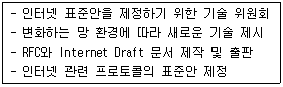
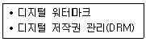
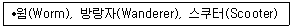
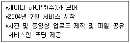

인터넷정보관리사-2급 (2010-12-04 기출문제)
1과목: 인터넷의 이해
1. 다음에서 설명하는 국외의 인터넷 관련 기구는 무엇인가?

- APNIC
- CERT
- IETF
- ICANN
(정답률: 57%)

2. 인터넷에 대한 설명 중 올바르지 않은 것은?
- 인터넷 연결을 위해서는 IP 주소를 배정 받아야 한다.
- 중앙에 어떠한 통제기구도 없다.
- 특정한 개인과 단체에 속한 네트워크이다.
- 클라이언트/서버 시스템을 기반으로 한다.
(정답률: 60%)
3. 컴퓨터 통신망에 대한 연구를 촉진하고 신기술을 개발하기 위해 IAB에서 설립한 기구로, 인터넷에 초점을 둔 컴퓨터 통신망 연구자들의 공동체는 무엇인가?
- IETF
- IRTF
- IAB
- ISOC
(정답률: 31%)
4. 인터넷의 다양한 정보 자원을 사용자들이 잘 활용할 수 있도록 제작된 문서는 무엇인가?
- IRG
- RFC
- FYI
- I-DS
(정답률: 35%)
5. 국내 도메인에서 교육기관을 위한 2단계 도메인 연결이 옳지 않은 것은?
- ms : 중학교
- es : 대학교
- kg : 유치원
- hs : 고등학교
(정답률: 96%)
6. 다음 중 북한을 나타내는 국가 도메인명은 무엇인가?
- cu
- kp
- at
- cn
(정답률: 77%)
7. 도메인 네임 서비스(Domain Name Service)에 대한 설명으로 틀린 것은?
- 네트워크에서 도메인이나 호스트 이름을 숫자로 된 IP로 해석해주는 서비스
- 클라이언트/서버 모델을 사용
- 하나의 DNS 서버가 모든 호스트를 관리
- 도메인 네임 서비스를 가능하게 하는 프로그램을 도메인 네임 시스템이라 함
(정답률: 52%)
8. IP주소 240.240.0.0은 IP클래스 분류 중 어느 클래스에 해당하는가?
- A클래스
- E클래스
- D클래스
- B클래스
(정답률: 38%)
9. IPv6에 대한 설명으로 옳지 않은 것은?
- 기존의 IPv4와 함께 동작할 수 있다.
- 실시간 멀티미디어 데이터를 처리할 수 있는 광대역폭을 가지고 있다.
- 16비트식 6개의 부분으로 나누어져 있다.
- IP-SEC를 탑재하였다.
(정답률: 69%)
10. 대부분의 전자우편 서비스에서 기본적으로 사용하고 있는 프로토콜로, 전자우편 주소로 도착한 메시지를 수신하기 위한 프로토콜은?
- SMTP
- MIME
- POP3
- PGP
(정답률: 47%)
11. FTP 서버 중 익명의 사이트에 접속이 많아 시스템 부하가 발생할 경우를 대비해 동일한 자료를 여러 사이트의 서버에서 제공하여 원활한 서비스의 제공을 목적으로 하는 것은?
- 미러 사이트 FTP
- Anonymous FTP
- 등록된 사용자
- Telnet
(정답률: 46%)
12. 본인이 가입한 메일링 리스트의 그룹 명단을 요청할 때 사용하는 명령어는 무엇인가?
- unsubscribe
- lists
- who
- info
(정답률: 20%)
13. 다음 중 웹 브라우저를 이용한 FTP 서비스에 대한 설명으로 가장 옳지 않은 것은?
- 별도의 FTP 전용 프로그램을 설치할 필요가 없다.
- 공개된 파일의 종류와 크기를 웹 브라우저를 통해 한눈에 파악할 수 있다.
- 웹 브라우저의 파일 저장 기능을 이용하여 원하는 파일을 다운로드 할 수 있다.
- Anonymous FTP 서버에 접속할 때 ID와 Password를 반드시 입력해야 한다.
(정답률: 48%)
14. 1980년 듀크대학 학생들에 의해 개발된 전자 게시판으로 전 세계 인터넷 사용자가 특정 주제별로 정보를 교환하는 토론 시스템을 무엇이라고 하는가?
- ERP
- Web mail
- Usenet
- FTP
(정답률: 56%)
15. 유즈넷 이용 시 네티켓에 대한 설명으로 올바르지 않은 것은?
- 게시판에 성격에 맞는 게시물을 올린다.
- 개별적인 논쟁이나 회답은 전자우편을 사용한다.
- 제목은 최대한 단답형으로 작성한다.
- 사실에 기초한 내용만 기재한다.
(정답률: 61%)
16. 네이트온, MSN과 같은 프로그램의 특징으로 가장 올바르지 않은 것은?
- 대화 참여자들끼리 실시간으로 응답이 가능하다.
- 시간과 공간의 제한없이 대화가 가능하다.
- 파일 전송 시 바이러스 검사가 자동으로 진행되므로 안전하다.
- 상대방의 접속 확인이 가능하다.
(정답률: 74%)
17. 다음 중 메신저와 가장 관련 깊은 프로그램은?
- Buddy Buddy
- WS_FTP
- BBS
- Mailing List
(정답률: 60%)
18. 전자상거래에서 사용되는 용어에 대한 설명 중 틀린 것은?
- EDI : 국제간 또는 국내 기업간의 컴퓨터 통신을 통하여 표준화된 거래문서를 전자적으로 상호 교환하는 방식
- CALS : 제품의 Life cycle 전반에 관련된 데이터를 통합하고 공유, 교환하여 비용 절감과 생산성 향상을 추구
- Cyber Business : 기업의 모든 자원을 전체적으로 컴퓨터 시스템을 사용하여 최적화된 기업 활동을 가능하게 하는 전산 시스템
- CRM : 현재 고객과 잠재된 고객에 대한 정보를 분석하고 수익을 창출할 수 있는 정보로 변환하여 마케팅 프로그램의 개발, 실현, 수정하는 고객중심 경영 기법
(정답률: 22%)
19. 전자상거래의 형태에 대한 설명 중 맞는 것은?
- B2G : 기업과 개인 사이의 전자적 거래
- G2C : 정부와 기업간의 전자적 거래
- B2B : 개인과 개인 사이의 전자적 거래
- G2B : 정부와 기업간의 전자적 거래
(정답률: 64%)
20. 인터넷 이용자의 실명과 주민등록번호가 확인 되어야만 인터넷 온라인 게시판에 글을 올릴 수 있는 제도는?
- 공인인증서
- 인터넷 실명제
- 공인전자서명
- Opt-in
(정답률: 76%)
21. 공인인증서의 발급과 관련하여 공인인증 기관이 발급하는 공인인증서에 포함되어야 하는 사항이 아닌 것은?
- 이름
- 인증서 일련번호
- 인증서 유효기간
- 인증서 발행횟수
(정답률: 75%)
22. 다음 중 저작재산권의 보호기간에 대한 설명과 가장 거리가 먼 것은?
- 특별한 규정이 있는 경우를 제외하고 저작자의 생존기간과 사망 후 50년간 존속
- 공동저작물의 저작재산권은 맨 마지막 사망한 저자자의 사망 후 50년간 존속
- 업무상저작물의 저작재산권은 공표한 때부터 30년간 존속
- 저작자가 사망 후 40년이 경과하고 50년이 되기 전에 공표된 저작물의 저작재산권은 공표된 때부터 10년간 존속
(정답률: 45%)
23. 다음 기술은 무엇을 위해 만들어진 것인가?

- 디지털 콘텐츠의 보호
- 컴퓨터 해킹 방지
- 인터넷의 불건전 정보 차단
- 인쇄물의 저작권 보호
(정답률: 70%)
24. 다음 중 저작권법에 관련된 용어 및 이에 대한 설명이 잘못 짝지어 진 것은?
- 편집물 : 저작물이나 부호ㆍ문자ㆍ음성ㆍ영상 그 밖의 형태의 자료의 집합물
- 배포 : 저작물등의 원본 또는 그 복제물을 공중에게 대가를 받거나 받지 아니하고 양도 또는 대여
- 발행 : 공중의 수요에 응하기 위하여 프로그램을 복제ㆍ배포하는 행위
- 공중 : 저작물등의 이용허락 등을 위하여 정당한 권리자임을 증명
(정답률: 37%)
25. 다음 중 채팅 시 지켜야할 네티켓으로 적당하지 않은 것은?
- 채팅방에 들어가자마자 자신의 의견을 개진 한다.
- 채팅방에 들어가고 나올 땐 인사를 한다.
- 다른 사람의 사생활을 존중한다.
- 자신의 감정을 나타내는 이모티콘을 적절히 사용한다.
(정답률: 81%)
26. 다음 중 올바른 네티켓이 아닌 경우는?
- 남의 의견에 대한 비난은 삼가야 한다.
- 자료를 인용할 때는 반드시 출처를 밝힌다.
- 채팅시에는 반드시 이모티콘을 사용해야 한다.
- 다른 사람의 실수를 용서한다.
(정답률: 83%)
27. 다음 중 컴퓨터 운영체제의 역할에 대한 설명으로 가장 거리가 먼 것은?
- 파일 시스템의 관리
- 문서작성 및 동영상 감상
- 시스템의 효율적인 운영과 관리
- 입출력 장치의 관리
(정답률: 57%)
28. 다음 컴퓨터의 구성 요소 중 보조기억장치에 속하지 않는 것은?
- CD-ROM
- RAM
- 하드디스크
- DVD-ROM
(정답률: 53%)
29. 다음 중 바이러스에 대한 설명으로 틀린 것은?
- 바이러스는 자체 복제를 하지 못한다.
- 바이러스에 감염되면 컴퓨터의 실행속도에 영향을 미칠 수 있다.
- 다른 유저에게 파일을 전송하기 전에 바이러스 검사를 해야 한다.
- 정기적인 바이러스 검사는 필수적이다.
(정답률: 65%)
30. 프로그램 안에서 스스로 자기 복제를 하거나 컴퓨터와 프로그램을 이동하며 전파되는 바이러스는 무엇인가?
- 스파이웨어
- 웜
- 스푸핑
- 애드웨어
(정답률: 55%)
31. ISDN의 채널 중 대용량의 데이터 전송에 사용되고 빠른 속도를 필요로 하는 고속 데이터, 고품질 오디오와 원격화상회의 등의 서비스에 사용 가능한 채널은?
- B채널
- D채널
- H채널
- A채널
(정답률: 35%)
32. 케이블 TV망을 통한 접속에 대한 설명으로 옳지 않은 것은?
- 유동 IP 주소 방식을 사용한다.
- 아날로그 전송 방식으로 전화선과 별도로 사용할 수 있다.
- 이용하는 동시 접속자의 수가 많아지면 전송 속도는 상대적으로 감소한다.
- 국내에서 제공하는 접속 서비스 중 최고의 속도를 자랑한다.
(정답률: 53%)
33. xDSL을 이용한 접속의 종류에 대한 설명으로 가장 올바르지 않은 것은?
- ADSL : 비대칭형 서비스로 상향에 비해 하향 속도가 빠르기 때문에 단방향 서비스에 적합하다.
- SDSL : 자원이용 효율이 높아 경제적이나 통신거리가 3Km이내여서 사내 화상회의 등에 사용한다.
- VDSL : ATM 장비 트렁크 연결에 주로 사용되며 지역별 사용자가 증가할수록 속도가 떨어진다.
- HDSL : 음성 통신 전용으로 사용한다.
(정답률: 25%)
2과목: 인터넷 자원 탐색
34. VOD, 멀티미디어, 원격 교육 등의 대용량 데이터 처리에 적합한 인터넷 접속 방식은?
- VDSL
- ADSL
- HDSL
- SDSL
(정답률: 36%)
35. 전용회선의 종류와 회선별 제공 속도가 올바르게 짝지어진 것은?
- T1 : 6Mbps
- E1 : 2.048Mbps
- T2 : 45Mbps
- T3 : 1.54Mbps
(정답률: 40%)
36. TCP/IP 프로토콜은 크게 4계층으로 구분할 수 있다. TCP와 UDP가 속한 계층은?
- 응용 계층
- 표현 계층
- 전송 계층
- 세션 계층
(정답률: 42%)
37. 웹문서에서 색깔을 지정할 때 다음 중 노랑색을 나타내는 것은?
- #ffff00
- #008000
- #000000
- #006400
(정답률: 48%)
38. HTML 태그에 대한 설명 중 틀린 것은?
- <Hn> : 머리글로 글자의 크기를 설정
- <br> : 줄바꾸기 역할
- <p> : 한 문단이 끝났음을 정의함
- <a> : 문서에 가로선을 나타냄
(정답률: 41%)
39. 다음 중 위지윅(WYSIWYG) 기반의 홈페이지 저작 도구에 해당하지 않는 것은?
- 프론트 페이지
- 핫도그
- 드림위버
- 나모 웹 에디터
(정답률: 50%)
40. 다음 멀티미디어 파일 중 인터넷 스트리밍 파일 형식으로 부적절한 것은?
- asf 파일
- bmp 파일
- wmv 파일
- rm 파일
(정답률: 34%)
41. 웹 브라우저의 기능을 추가하는 플러그인과 확장자가 잘못 연결된 것은?
- Acrobat Reader : pdf
- Quicktime : zip
- Shockwave Flash : swf
- Windows Media Player : avi
(정답률: 45%)
42. 다음 중 Well-Known port 번호가 잘못 연결된 것은 무엇인가?
- FTP: 21
- Telnet: 23
- Ipx: 215
- WWW: 80
(정답률: 50%)
43. 다음 중 XML에 대한 설명으로 틀린 것은?
- eXtensible Markup Language의 약자이다.
- 분산처리에 적합하다.
- 확장성이 떨어지는 단점이 있다.
- 서로 다른 DB간에도 데이터 교환이 가능하다.
(정답률: 46%)
44. 다음 중 자바스크립트(Javascript)에 대한 설명으로 옳지 않은 것은?
- 스크립트 언어이다.
- 복잡한 프로그래밍 작성에 적합하다.
- 디버깅이 용이하다.
- 반복적인 작업의 수행에 적합하다.
(정답률: 29%)
45. 다음 중 텍스트 파일의 확장자가 아닌 것은?
- *.gul
- *.png
- *.hwp
- *.doc
(정답률: 30%)
46. 다음 중 이미지 파일의 확장자로 틀린 것은?
- *.bmp
- *.gif
- *.jpg
- *.ps
(정답률: 62%)
47. 다음 멀티미디어 용어 중에서 기존의 그림을 다른 형태로 새롭게 변형하거나 수정하는 작업을 무엇이라 하는가?
- 디더링(Dithering)
- 모델링(Modeling)
- 렌더링(Rendering)
- 리터칭(Retouching)
(정답률: 23%)
48. 플러그인(Plug-in)에 대한 설명으로 옳지 않은 것은?
- 웹 브라우저의 기능을 확장하는 외부 보조 프로그램이다.
- 애드온(Add-on) 또는 헬퍼(Helper)로 불리기도 한다.
- 웹 브라우저에서 실행되기도 하며 단독적으로 실행되기도 한다.
- 플러그인 프로그램은 대부분 유료로 제공 된다.
(정답률: 49%)
49. 다음 중 플러그인(plug-in) 프로그램이 아닌 것은 무엇인가?
- QuickTime
- ShockWave Flash
- Acrobat Reader
- TIFF
(정답률: 44%)
50. 다음 중 압축 프로그램이 아닌 것은?
- WinZip
- WinRAR
- Norton
- ALZIP
(정답률: 39%)
51. 근거리 무선통신 규격의 하나로 저렴한 가격과 적은 전력 소모로 휴대폰 등과 같은 휴대장치들에 장착되어 10~100m내의 무선 연결을 위한 프로토콜을 무엇이라고 하는가?
- 3G
- Bluetooth
- wipi
- IEEE 1394
(정답률: 57%)
52. 멀티미디어에 대한 설명 중 가장 거리가 먼 것은?
- 디지털 컨텐츠는 공간의 제약은 없으나 시간의 제약이 있다.
- 멀티미디어 데이터는 다양하게 표현 가능한 미디어를 컴퓨터가 읽을 수 있는 형태로 표현한 것이다.
- 멀티미디어 데이터는 용량이 크기 때문에 저장 및 전송을 위해 압축 알고리즘을 사용한다.
- 멀티미디어는 디지털을 기본으로 양방향성을 가진다.
(정답률: 61%)
53. 웹 브라우저의 화면을 프리젠테이션용 화면으로 변경해 주는 기능으로 가장 적절한 것은?
- 전체화면
- 페이지
- 인코딩
- 피드
(정답률: 37%)
54. 다음 중 웹 브라우저에 대한 설명으로 가장 올바른 것은?
- 웹 서버에 저장되어 있는 정보를 불러와서 사용자의 컴퓨터 화면에 보여주는 역할을 하는 프로그램
- 네트워크상에서 특정한 주제나 관심사에 대하여 정보를 교류할 수 있는 전 세계적인 토론 시스템
- 다른 프로그램들과는 달리 사용자 몰래 자기 자신을 다른 곳에 복사하는 명령어를 가진 프로그램
- 멀티유저, 멀티태스킹 운영체제로 고급 언어로 작성되었다.
(정답률: 60%)
55. 다음 중 웹 브라우저에 해당하지 않는 것은?
- 비보액티브(VivoActive)
- 파이어폭스(FireFox)
- 구글 크롬(Google Chrome)
- 오페라(Opera)
(정답률: 64%)
56. 1989년 미국에서 개발되었으며 단순히 텍스트 위주의 문서만을 보여주는 브라우저는?
- Mosaic
- Explorer
- Lynx
- FireFox
(정답률: 53%)
57. 인터넷 익스플로러 7.0에서 익스플로러 버전 확인을 위해 선택해야 하는 메뉴는 무엇인가?
- 도구
- 도움말
- 즐겨찾기
- 보기
(정답률: 40%)
58. 인터넷 익스플로러 7.0에서 사용되는 단축키에 대한 기능 설명이 다른 것은?
- Crtl+X : 잘라내기
- Crtl+A : 붙여넣기
- Crtl+P : 인쇄하기
- Crtl+F : 이 페이지내에서 찾기
(정답률: 48%)
59. 인터넷 익스플로러 7.0에서 선택된 영역에 적용할 보안 수준을 설정할 수 있는 경로로 알맞은 것은?
- [도구]-[인터넷 옵션]-[개인정보]
- [도구]-[인터넷 옵션]-[보안]
- [도구]-[인터넷 옵션]-[연결]
- [도구]-[인터넷 옵션]-[고급]
(정답률: 39%)
60. 인터넷 익스플로러 7.0에서 등급을 사용하여 볼 수 있는 인터넷 콘텐츠를 지정할 수 있는 경로로 알맞은 것은?
- [도구]-[인터넷 옵션]-[보안]
- [도구]-[인터넷 옵션]-[고급]
- [도구]-[인터넷 옵션]-[연결]
- [도구]-[인터넷 옵션]-[내용]
(정답률: 11%)
61. 인터넷 익스플로러 7.0에서 인터넷에 연결할 때 사용할 전화 접속 네트워킹의 종류, 연결 방법과 LAN 설정을 할 수 있는 경로로 알맞은 것은?
- [도구]-[인터넷 옵션]-[고급]
- [도구]-[인터넷 옵션]-[연결]
- [도구]-[인터넷 옵션]-[내용]
- [도구]-[인터넷 옵션]-[일반]
(정답률: 45%)
62. 인터넷 익스플로러 7.0에서 인터넷 익스플로러 기본 설정을 복구할 수 있는 경로로 알맞은 것은?
- [도구]-[인터넷 옵션]-[일반]
- [도구]-[인터넷 옵션]-[보안]
- [도구]-[인터넷 옵션]-[고급]
- [도구]-[인터넷 옵션]-[연결]
(정답률: 35%)
63. 웹서핑 중 글자가 깨져서 출력 될 때의 해결 방법은 무엇인가?
- [보기] -> [새로고침] 선택
- [파일] -> [페이지 설정] 선택
- [파일] -> [가져오기 및 내보내기] 선택
- [보기] -> [인코딩] 선택
(정답률: 52%)
64. 검색엔진에 대한 설명 중 가장 올바르지 않은 것은?
- 인터넷상의 많은 정보들 중에서 필요한 정보를 검색하도록 도와주는 도구이다.
- 사용자가 원하는 정보를 찾을 수 있도록 해주는 일종의 데이터베이스이다.
- 검색하고자 하는 특정한 키워드를 알 수 없을 경우에는 주제별 검색엔진을 이용한다.
- 인터넷 사이트를 돌아다니며 정보를 수집하고, 인터넷 문서의 데이터베이스를 구축하는 프로그램을 인덱스라고 한다.
(정답률: 62%)
65. 검색엔진에서 특정한 키워드를 입력하여 검색된 정보가 100개일 때 이중에 75개의 정보가 적합한 정보라면 이 검색의 정확률은 얼마인가?
- 25%
- 75%
- 45%
- 85%
(정답률: 72%)
66. 검색엔진에서 아래와 같은 이름을 가진 프로그램이 하는 일은 무엇인가?

- 인터넷 자료의 수집
- 디버깅
- 개인간 파일 공유
- 바이러스 탐지
(정답률: 46%)
3과목: 인터넷 윤리
67. 다음에서 설명하고 있는 특징을 갖고 있는 검색엔진은?

- Paran.com
- Nate.com
- Daum.net
- Naver.com
(정답률: 63%)
68. 다음 웹 브라우저의 설명 중 올바르지 않은 것은?
- 링스 : 텍스트 기반의 웹 브라우저
- 아라크네 : 마이클 폴락이 만든 도스용 브라우저
- 삼바 : CERN에서 개발한 텍스트 기반의 매킨토시용 웹 브라우저
- 모자이크 : 토마스 브루스가 개발한 웹브라우저
(정답률: 32%)
69. 검색엔진 중 자체적으로 데이터베이스를 구축하지 않고 입력된 키워드를 가지고 여러 개의 검색엔진을 동시에 검색하여 검색된 결과만을 사용자의 화면에서 보여주는 검색엔진은 무엇인가?
- 메타 검색엔진
- 주제별 검색엔진
- 단어별 검색엔진
- 하이브리드 검색엔진
(정답률: 43%)
70. 다음 중 외국에서 개발된 검색엔진으로만 올바르게 짝지어진 것은?
- google, yahoo, daum
- yahoo, nate, altavista
- altavista, google, daum
- yahoo, google, ask
(정답률: 54%)
71. 일부 웹 제작자들이 위치와 빈도를 높이기 위해 한 페이지 내에 같은 키워드를 반복하여 수십개씩 입력하는 행위를 말하는 용어는?
- 스팸
- 스푸밍
- 스패밍
- 피싱
(정답률: 36%)
72. 로봇 배제 표준에 대한 설명 중 옳지 않은 것은?
- 1994년에 제안되었다.
- 로봇으로부터의 피해를 최소화하기 위해 제안 되었다.
- 서버의 부담을 줄여 인터넷 속도가 향상될 수 있다.
- 로봇의 접근을 배제하는 방법은 robots.txt 파일을 이용하는 방법 하나만 개발된 상태이다.
(정답률: 29%)
73. 검색엔진의 구성요소 중 검색자가 키워드를 입력하여 검색을 요청했을 때, 색인으로부터 검색조건에 맞는 정보들을 추출해 내고, 이 정보들을 검색자가 원하는 정보에 가장 적합하다고 판단되는 순서대로 정렬하여 브라우저의 화면에 출력해 주는 역할을 하는 것은 무엇인가?
- 로봇
- 색인기
- 화이트 페이지
- 검색엔진 소프트웨어
(정답률: 50%)
74. 포털사이트의 서비스들 중에서 가장 성격이 다른 하나는?
- 야후 꾸러기
- 파란 Usay
- 다음 키즈짱
- 쥬니어 네이버
(정답률: 56%)
75. 다음 중 검색엔진과 같은 회사의 게임 전용 사이트의 연결이 올바르게 된 것은?
- 네이버 - 한게임
- 네이트 - 넷마블
- 다음 - 피망
- 파란 - 넥슨
(정답률: 55%)
76. 누락 또는 누출을 의미하는 용어로, 정보의 검색 결과에서 검색되었어야 함에도 불구하고, 부적절한 키워드 선정이나 연산자의 잘못된 사용으로 인하여 검색 결과에서 빠져버린 누락된 정보를 뜻하는 것은?
- 리키즈
- 개비지
- 불용어
- 시소러스
(정답률: 59%)
77. 다음 인터넷 정보원의 기본 원칙에 대한 설명 중 가장 올바르지 못한 것은?
- 검색 대상을 정확히 파악하고 검색한다.
- 정보원의 1차 정보에는 서지, 색인, 초록지 등이 있다.
- 키워드 선정 시 주제와 관련하여 다양하게 고려해야 한다.
- 대/소문자를 구분하여 검색하는 경우를 고려해야 한다.
(정답률: 53%)
78. 국내의 인터넷 검색엔진을 통해 검색할 수 있는 정보의 내용이 아닌 것은?
- 달러화의 환율 변동 추세
- 검색포털에 가입된 회원의 메일 내용
- 연예인의 이미지 파일
- 언론매체에 게재된 기사 내용
(정답률: 63%)
79. 다음 중 1차 정보에 속하는 것은 무엇인가?
- 특허정보
- 서지
- 교과서
- 백과사전
(정답률: 25%)
80. 다음 중 정보검색의 개념과 가장 관련이 없는 것은?
- 대량의 정보 중에서 필요한 정보를 빠르고 정확하게 찾아내는 것을 목적으로 한다.
- 1960년 무어즈가 처음으로 사용한 용어이다.
- 정보검색의 기본원칙을 잘 지켜야 인터넷에서 정보검색을 잘 할 수 있다.
- 각종 이미지와 공개 소프트웨어들을 검색엔진을 통해 쉽게 찾을 수 있다.
(정답률: 53%)